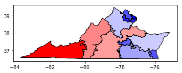
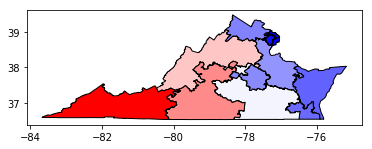

Gerrymandering is a practice intended to establish a political advantage for a particular party of group by manipulating district boundaries. The Metric Geometry and Gerrymandering Group (MGGG) is a research group from Tufts University and MIT that focuses on applications of geometry and computing to U.S. redistricting and gerrymandering. They conduct research on the redistricting problem, build open-source tools and resources to enable the public to better understand districts and consequences and offer expertise opinion to different stakeholders on all sides. They specifically interested in the interplay between the legal constraints and the measurements of interes and among the measurements themselves and the researchers have struggled to understand the trade-offs between these intertwined metrics. This is where we come in to help with an interactive data visualization system.
Here is an example of a simulated districting plan
Please, see our write-up here.
Here are the definitions for you to choose from
To start with, please choose a state to analyze: Virgina or Pennsylvania
Choose a metric to filter on:
Distribution of the number of cuts across possible districting plans
Distribution of the Democratic votes in the most Democratic district across possible districting plans
Distribution of the mean-median across possible districting plans
Distribution of the number of Democratic seats across possible districting plans
Distribution of the efficiency gap across possible districting plans
Map 1
Map 2
Map 3
Distribution of the Number of Cuts across possible districting plans
Distribution of the Percentage of Democratic Votes for the Most Democratic District across possible districting plans
Distribution of the Mean Median across possible districting plans
Distribution of the Number of Democratic Seats across possible districting plans
Distribution of the Efficiency Gap across possible districting plans